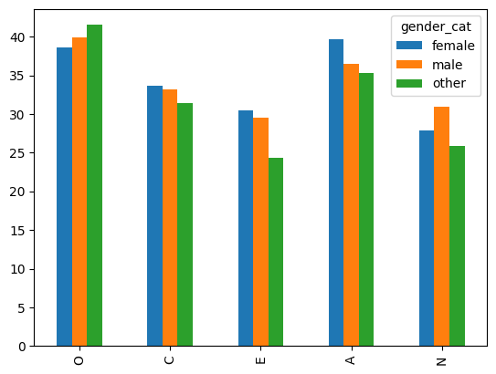

import pandas as pd
import re
import numpy as np
import matplotlib.pyplot as plt
from IPython.display import displaybig5_df = pd.read_csv('data/openpsych_data.csv', sep='\t')big5_df.columnsIndex(['race', 'age', 'engnat', 'gender', 'hand', 'source', 'country', 'E1',
'E2', 'E3', 'E4', 'E5', 'E6', 'E7', 'E8', 'E9', 'E10', 'N1', 'N2', 'N3',
'N4', 'N5', 'N6', 'N7', 'N8', 'N9', 'N10', 'A1', 'A2', 'A3', 'A4', 'A5',
'A6', 'A7', 'A8', 'A9', 'A10', 'C1', 'C2', 'C3', 'C4', 'C5', 'C6', 'C7',
'C8', 'C9', 'C10', 'O1', 'O2', 'O3', 'O4', 'O5', 'O6', 'O7', 'O8', 'O9',
'O10'],
dtype='str')big5_df| race | age | engnat | gender | hand | source | country | E1 | E2 | E3 | ... | O1 | O2 | O3 | O4 | O5 | O6 | O7 | O8 | O9 | O10 | |
|---|---|---|---|---|---|---|---|---|---|---|---|---|---|---|---|---|---|---|---|---|---|
| 0 | 3 | 53 | 1 | 1 | 1 | 1 | US | 4 | 2 | 5 | ... | 4 | 1 | 3 | 1 | 5 | 1 | 4 | 2 | 5 | 5 |
| 1 | 13 | 46 | 1 | 2 | 1 | 1 | US | 2 | 2 | 3 | ... | 3 | 3 | 3 | 3 | 2 | 3 | 3 | 1 | 3 | 2 |
| 2 | 1 | 14 | 2 | 2 | 1 | 1 | PK | 5 | 1 | 1 | ... | 4 | 5 | 5 | 1 | 5 | 1 | 5 | 5 | 5 | 5 |
| 3 | 3 | 19 | 2 | 2 | 1 | 1 | RO | 2 | 5 | 2 | ... | 4 | 3 | 5 | 2 | 4 | 2 | 5 | 2 | 5 | 5 |
| 4 | 11 | 25 | 2 | 2 | 1 | 2 | US | 3 | 1 | 3 | ... | 3 | 1 | 1 | 1 | 3 | 1 | 3 | 1 | 5 | 3 |
| ... | ... | ... | ... | ... | ... | ... | ... | ... | ... | ... | ... | ... | ... | ... | ... | ... | ... | ... | ... | ... | ... |
| 19714 | 11 | 15 | 1 | 2 | 1 | 2 | SG | 1 | 4 | 3 | ... | 1 | 3 | 5 | 3 | 4 | 1 | 4 | 2 | 5 | 3 |
| 19715 | 3 | 37 | 1 | 2 | 1 | 2 | US | 2 | 3 | 2 | ... | 1 | 2 | 3 | 2 | 3 | 3 | 4 | 2 | 3 | 3 |
| 19716 | 5 | 16 | 2 | 1 | 1 | 2 | US | 2 | 5 | 4 | ... | 5 | 3 | 1 | 3 | 4 | 1 | 1 | 5 | 5 | 5 |
| 19717 | 12 | 16 | 1 | 1 | 1 | 5 | NG | 1 | 4 | 2 | ... | 3 | 2 | 5 | 3 | 4 | 1 | 5 | 3 | 5 | 5 |
| 19718 | 3 | 35 | 1 | 1 | 1 | 1 | US | 2 | 3 | 1 | ... | 5 | 1 | 5 | 1 | 4 | 1 | 5 | 5 | 5 | 5 |
19719 rows × 57 columns
race
Chosen from a drop down menu.
1=Mixed Race, 2=Arctic (Siberian, Eskimo), 3=Caucasian (European), 4=Caucasian (Indian), 5=Caucasian (Middle East), 6=Caucasian (North African, Other), 7=Indigenous Australian, 8=Native American, 9=North East Asian (Mongol, Tibetan, Korean Japanese, etc), 10=Pacific (Polynesian, Micronesian, etc), 11=South East Asian (Chinese, Thai, Malay, Filipino, etc), 12=West African, Bushmen, Ethiopian, 13=Other (0=missed)race_values = '''1=Mixed Race, 2=Arctic (Siberian, Eskimo), 3=Caucasian (European),
4=Caucasian (Indian), 5=Caucasian (Middle East), 6=Caucasian (North African, Other),
7=Indigenous Australian, 8=Native American,
9=North East Asian (Mongol, Tibetan, Korean Japanese, etc),
10=Pacific (Polynesian, Micronesian, etc),
11=South East Asian (Chinese, Thai, Malay, Filipino, etc), 12=West African, Bushmen, Ethiopian, 13=Other, 0=missed
'''
parts = re.split(r'(?:,\s+)?([0-9]+)=', race_values.strip())
race_keys = [int(key_val) for key_val in parts[1::2]]
race_values = parts[2::2]race_mapping = dict(zip(race_keys,race_values))
race_mapping{1: 'Mixed Race',
2: 'Arctic (Siberian, Eskimo)',
3: 'Caucasian (European)',
4: 'Caucasian (Indian)',
5: 'Caucasian (Middle East)',
6: 'Caucasian (North African, Other)',
7: 'Indigenous Australian',
8: 'Native American',
9: 'North East Asian (Mongol, Tibetan, Korean Japanese, etc)',
10: 'Pacific (Polynesian, Micronesian, etc)',
11: 'South East Asian (Chinese, Thai, Malay, Filipino, etc)',
12: 'West African, Bushmen, Ethiopian',
13: 'Other',
0: 'missed'}big5_df=big5_df.assign(race_cat=big5_df['race'].map(race_mapping))(big5_df['race_cat'].value_counts()Cell In[42], line 1 (big5_df['race_cat'].value_counts() ^ SyntaxError: incomplete input
age
age entered as text (individuals reporting age < 13 were not recorded)
big5_df['age'].max()np.int64(999999999)big5_df['age'].value_counts().tail(50)age
68 20
67 19
69 15
70 12
71 11
1992 9
72 8
1994 8
1996 7
1995 5
1993 5
75 5
1989 5
1997 4
1982 4
1998 4
1991 3
1990 3
77 3
188 2
1976 2
1984 2
74 2
76 2
73 2
1986 2
79 2
1985 2
1999 1
1988 1
100 1
208 1
999999999 1
1961 1
1977 1
412434 1
92 1
2000 1
80 1
1974 1
97 1
1968 1
211 1
223 1
99 1
266 1
191 1
78 1
1964 1
118 1
Name: count, dtype: int64big5_dfbig5_df['age']>100]['age'].value_counts()Cell In[45], line 1 big5_dfbig5_df['age']>100]['age'].value_counts() ^ SyntaxError: unmatched ']'
gender
gender Chosen from a drop down menu. 1=Male, 2=Female, 3=Other (0=missed)
gender_map = {
0: pd.NA,
1: 'male',
2: 'female',
3: 'other'
}big5_df['gender'].value_counts()gender
2 11985
1 7608
3 102
0 24
Name: count, dtype: int64big5_df=big5_df.assign(gender_cat=big5_df['gender'].map(gender_map))big5_df['gender_cat'].value_counts()gender_cat
female 11985
male 7608
other 102
Name: count, dtype: int64hand
hand “What hand do you use to write with?”. 1=Right, 2=Left, 3=Both (0=missed)
big5_df['hand'].value_counts()hand
1 17424
2 1724
3 471
0 100
Name: count, dtype: int64source
How the participant came to the test. Based on HTTP Referer. 1=from another page on the test website, 2=from google, 3=from facebook, 4=from any url with “.edu” in its domain name (e.g. xxx.edu, xxx.edu.au), 6=other source, or HTTP Referer not provided.
big5_df['source'].value_counts()source
1 12099
2 3653
5 3527
3 303
4 137
Name: count, dtype: int64country
The participant’s technical location. ISO country code.
big5_df['country'].value_counts().head(20)country
US 8753
GB 1531
IN 1464
AU 974
CA 924
PH 649
(nu 369
IT 277
MY 247
PK 222
DE 191
ZA 179
BR 175
ID 172
SE 169
NZ 157
NO 147
RO 135
SG 133
NL 133
Name: count, dtype: int64big5_df['country'].nunique()158Scoring
- https://ipip.ori.org/newScoringInstructions.htm
Here is how to score IPIP scales:
For + keyed items, the response “Very Inaccurate” is assigned a value of 1, “Moderately Inaccurate” a value of 2, “Neither Inaccurate nor Accurate” a 3, “Moderately Accurate” a 4, and “Very Accurate” a value of 5.
For - keyed items, the response “Very Inaccurate” is assigned a value of 5, “Moderately Inaccurate” a value of 4, “Neither Inaccurate nor Accurate” a 3, “Moderately Accurate” a 2, and “Very Accurate” a value of 1.
Once numbers are assigned for all of the items in the scale, just sum all the values to obtain a total scale score.
Keyed items
https://ipip.ori.org/new_ipip-50-item-scale.htm
questions = '''
E1 I am the life of the party.
E2 I don't talk a lot.
E3 I feel comfortable around people.
E4 I keep in the background.
E5 I start conversations.
E6 I have little to say.
E7 I talk to a lot of different people at parties.
E8 I don't like to draw attention to myself.
E9 I don't mind being the center of attention.
E10 I am quiet around strangers.
N1 I get stressed out easily.
N2 I am relaxed most of the time.
N3 I worry about things.
N4 I seldom feel blue.
N5 I am easily disturbed.
N6 I get upset easily.
N7 I change my mood a lot.
N8 I have frequent mood swings.
N9 I get irritated easily.
N10 I often feel blue.
A1 I feel little concern for others.
A2 I am interested in people.
A3 I insult people.
A4 I sympathize with others' feelings.
A5 I am not interested in other people's problems.
A6 I have a soft heart.
A7 I am not really interested in others.
A8 I take time out for others.
A9 I feel others' emotions.
A10 I make people feel at ease.
C1 I am always prepared.
C2 I leave my belongings around.
C3 I pay attention to details.
C4 I make a mess of things.
C5 I get chores done right away.
C6 I often forget to put things back in their proper place.
C7 I like order.
C8 I shirk my duties.
C9 I follow a schedule.
C10 I am exacting in my work.
O1 I have a rich vocabulary.
O2 I have difficulty understanding abstract ideas.
O3 I have a vivid imagination.
O4 I am not interested in abstract ideas.
O5 I have excellent ideas.
O6 I do not have a good imagination.
O7 I am quick to understand things.
O8 I use difficult words.
O9 I spend time reflecting on things.
O10 I am full of ideas.
'''big5_questions_df = pd.DataFrame([item.split('\t') for item in questions.splitlines() if item>''])big5_questions_df| 0 | 1 | |
|---|---|---|
| 0 | E1 | I am the life of the party. |
| 1 | E2 | I don't talk a lot. |
| 2 | E3 | I feel comfortable around people. |
| 3 | E4 | I keep in the background. |
| 4 | E5 | I start conversations. |
| 5 | E6 | I have little to say. |
| 6 | E7 | I talk to a lot of different people at parties. |
| 7 | E8 | I don't like to draw attention to myself. |
| 8 | E9 | I don't mind being the center of attention. |
| 9 | E10 | I am quiet around strangers. |
| 10 | N1 | I get stressed out easily. |
| 11 | N2 | I am relaxed most of the time. |
| 12 | N3 | I worry about things. |
| 13 | N4 | I seldom feel blue. |
| 14 | N5 | I am easily disturbed. |
| 15 | N6 | I get upset easily. |
| 16 | N7 | I change my mood a lot. |
| 17 | N8 | I have frequent mood swings. |
| 18 | N9 | I get irritated easily. |
| 19 | N10 | I often feel blue. |
| 20 | A1 | I feel little concern for others. |
| 21 | A2 | I am interested in people. |
| 22 | A3 | I insult people. |
| 23 | A4 | I sympathize with others' feelings. |
| 24 | A5 | I am not interested in other people's problems. |
| 25 | A6 | I have a soft heart. |
| 26 | A7 | I am not really interested in others. |
| 27 | A8 | I take time out for others. |
| 28 | A9 | I feel others' emotions. |
| 29 | A10 | I make people feel at ease. |
| 30 | C1 | I am always prepared. |
| 31 | C2 | I leave my belongings around. |
| 32 | C3 | I pay attention to details. |
| 33 | C4 | I make a mess of things. |
| 34 | C5 | I get chores done right away. |
| 35 | C6 | I often forget to put things back in their pro... |
| 36 | C7 | I like order. |
| 37 | C8 | I shirk my duties. |
| 38 | C9 | I follow a schedule. |
| 39 | C10 | I am exacting in my work. |
| 40 | O1 | I have a rich vocabulary. |
| 41 | O2 | I have difficulty understanding abstract ideas. |
| 42 | O3 | I have a vivid imagination. |
| 43 | O4 | I am not interested in abstract ideas. |
| 44 | O5 | I have excellent ideas. |
| 45 | O6 | I do not have a good imagination. |
| 46 | O7 | I am quick to understand things. |
| 47 | O8 | I use difficult words. |
| 48 | O9 | I spend time reflecting on things. |
| 49 | O10 | I am full of ideas. |
Questions and direction key
https://ipip.ori.org/new_ipip-50-item-scale.htm
factor_map = { 1: 'E',
2: 'A',
3: 'C',
4: 'N',
5: 'O' }ipip_df = pd.read_html('big5_questions.html', header=0)[0]
ipip_df = ipip_df.rename(columns={'Unnamed: 1': 'text', 'Unnamed: 7': 'factor_and_direction'})[['text','factor_and_direction']]
ipip_df[['factor','direction']]=ipip_df['factor_and_direction'].str.extract(r'([1-5])(.)')
ipip_df['category']=ipip_df['factor'].astype(int).map(factor_map)ipip_df = ipip_df.assign(number=np.repeat(np.arange(1,11),5))
ipip_df = ipip_df.assign(qcode=ipip_df['category'].str.cat(ipip_df['number'].astype(str))) neg_items = ipip_df.query('direction=="-"')['qcode']
neg_items1 A1
3 N1
5 E2
7 C2
9 O2
11 A3
13 N3
15 E4
17 C4
19 O4
21 A5
23 N5
25 E6
27 C6
28 N6
29 O6
31 A7
33 N7
35 E8
37 C8
38 N8
43 N9
45 E10
48 N10
Name: qcode, dtype: str- Make a copy of the original dataframe to keep available in case of mistakes
big5_scored_df = big5_df.copy()- Reverse code the
negativelykeyed items
big5_scored_df[neg_items] = 6-big5_df[neg_items]E_cols = [f'E{n+1}' for n in range(10)]
E_cols['E1', 'E2', 'E3', 'E4', 'E5', 'E6', 'E7', 'E8', 'E9', 'E10']cat_cols = {
cat : [f'{cat}{n+1}' for n in range(10)]
for cat in ('O','C','E','A','N')
}cat_cols{'O': ['O1', 'O2', 'O3', 'O4', 'O5', 'O6', 'O7', 'O8', 'O9', 'O10'],
'C': ['C1', 'C2', 'C3', 'C4', 'C5', 'C6', 'C7', 'C8', 'C9', 'C10'],
'E': ['E1', 'E2', 'E3', 'E4', 'E5', 'E6', 'E7', 'E8', 'E9', 'E10'],
'A': ['A1', 'A2', 'A3', 'A4', 'A5', 'A6', 'A7', 'A8', 'A9', 'A10'],
'N': ['N1', 'N2', 'N3', 'N4', 'N5', 'N6', 'N7', 'N8', 'N9', 'N10']}for cat, cols in cat_cols.items():
big5_scored_df[cat]=big5_scored_df[cols].sum(axis=1)big5_scored_df[['O','C','E','A','N']]| O | C | E | A | N | |
|---|---|---|---|---|---|
| 0 | 43 | 47 | 44 | 46 | 49 |
| 1 | 26 | 42 | 22 | 35 | 29 |
| 2 | 45 | 49 | 35 | 38 | 14 |
| 3 | 41 | 26 | 22 | 37 | 17 |
| 4 | 34 | 34 | 34 | 44 | 30 |
| ... | ... | ... | ... | ... | ... |
| 19714 | 35 | 36 | 21 | 42 | 19 |
| 19715 | 30 | 32 | 25 | 36 | 39 |
| 19716 | 37 | 23 | 21 | 26 | 10 |
| 19717 | 42 | 43 | 21 | 38 | 20 |
| 19718 | 49 | 36 | 24 | 35 | 23 |
19719 rows × 5 columns
gender_dist_df = (
big5_scored_df.
groupby('gender_cat')[['O','C','E','A','N']].
agg('mean').
round(1)
)
gender_dist_df| O | C | E | A | N | |
|---|---|---|---|---|---|
| gender_cat | |||||
| female | 38.6 | 33.6 | 30.5 | 39.7 | 27.9 |
| male | 39.9 | 33.2 | 29.5 | 36.5 | 30.9 |
| other | 41.5 | 31.4 | 24.3 | 35.3 | 25.9 |
gender_dist_df.transpose().plot(kind='bar')
gender_dist_df.transpose()| gender_cat | female | male | other |
|---|---|---|---|
| O | 38.6 | 39.9 | 41.5 |
| C | 33.6 | 33.2 | 31.4 |
| E | 30.5 | 29.5 | 24.3 |
| A | 39.7 | 36.5 | 35.3 |
| N | 27.9 | 30.9 | 25.9 |
india_df = Cell In[71], line 1 india_df = ^ SyntaxError: invalid syntax
india_df.shape(
big5_scored_df.query('country in ["US","GB","IN","AU","CA"]').
groupby('country')[['O','C','E','A','N']].
agg('mean').
round(1).
transpose().
plot(kind='barh')
) big5_scored_df.query('country=="IN"').shapebig5_scored_df.query('country in ["US","GB"]')